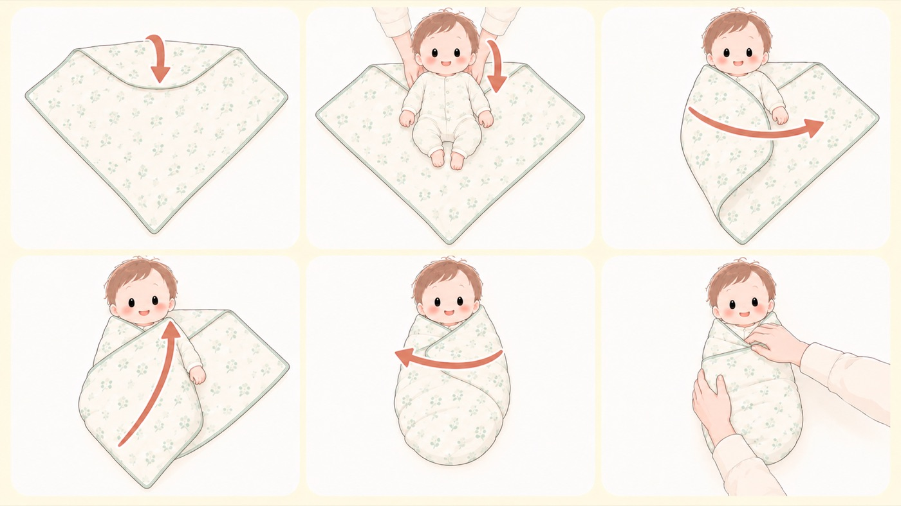

おくるみの巻き方
上半身はぴったり、下半身はゆったり。寝返りのきざしが見えたらやめる
おくるみは、自分の手足がビクッと動く反射（モロー反射大きな音や体が傾いた感じに驚いて、両手をぱっと広げて抱きつくように動く、生まれつきの反射。生後4〜6か月ごろまで見られる。）で目を覚ましてしまうのを和らげ、落ち着いて眠るのを助けます。ただし安全かどうかは巻き方で決まり、上半身と下半身で締め方を変えます。「上半身はぴったり、下半身はゆったり」が基本です。巻き方は何種類かありますが、ここでは日本で「基本巻き」と呼ばれる方式を図解します。片側 → 足元 → 反対側の順に巻きます。

ひし形に広げて、上の角を折る
薄手の正方形のブランケットを、ひし形になるように広げます。いちばん上の角を、布の中心点に向けて内側に折ります。
折り目に肩が沿うように、仰向けに寝かせる
赤ちゃんを仰向けに寝かせます。肩のラインが折り目と重なる位置です。頭はおくるみの外に出します。
片方の腕を体に沿わせ、その側の布をかぶせる
たとえば右腕を体の横にまっすぐ沿わせます。同じ側（右）の布の端を持って、肩から体にかぶせ、端を背中の下に挟み込みます。
足元の布を、ふんわり折って肩の後ろに差し込む
足元の角を持ち、脚を締めつけないようにふんわりと折って、端を、3でかぶせた側の肩まで斜めに運び、肩の後ろにできた折り目に差し込みます。ここをきつくすると脚が伸びたまま固定されます。布の中で脚がM字に曲げられる、ゆるみを残します。
もう片方の腕を沿わせ、反対側の布を巻く
左腕を体の横に沿わせ、左の布を体に巻き付けます。余った端を背中の下に入れれば、両腕が包まれます。
巻けたら、ゆとりを確かめる
胸元に指が2〜3本入るか。布の中で脚がM字に開き、自由に動かせるか。この2つを確かめて完成です。
- すること：胸元に指が2〜3本入るゆとりがあるか
きつすぎると呼吸がしにくくなります。 - しないこと：脚を締めつけて固定しない
脚が伸びた状態で固定されると、股関節が悪い位置のままになります。足元はふんわり包むだけにして、布の中で脚がM字に曲げられるゆとりを残します。 - すること：腰から下はゆったりしていて、脚がM字に曲げられるか
脚をまっすぐ伸ばしてきつく巻くと、股関節脱臼につながることがあります。 - すること：必ずあおむけで寝かせているか
おくるみをした赤ちゃんがうつ伏せになると、顔を自分で上げられず危険です。 - すること：寝返りのきざしが見えたら、おくるみはやめる
早い子では生後2か月ごろから始まります。腕を包むタイプのスリーパーも同じタイミングで卒業します。国内でも、生後6か月の赤ちゃんがスワドル使用中に心肺停止となった事例が報告されています。 - しないこと：「おくるみ」と「スワドル」を別物と考えない
日本では一枚の布を巻くタイプを「おくるみ」、服のように着せるタイプを「スワドル」と呼び分けることが多いのですが、体を包み込む点は同じです。注意点も同じです。 - しないこと：ほどけて顔にかかる布を、寝床に残さない
ゆるんだおくるみが顔を覆う事故が起きています。 - しないこと：厚着＋おくるみ＋かけ布団の重ねすぎをしない
体温が上がりすぎることがあります。汗ばむ、髪が湿る、ほおが赤い、呼吸が速いときは暑すぎのサインです。 - しないこと：重り入り（ウェイテッド）のおくるみは使わない
胸や肺を圧迫するおそれがあります。
ほかの巻き方との関係
おくるみの巻き方は一つではありません。ここで図解したのは、 日本で「基本巻き」と呼ばれる、一枚の正方形の布で包む方式です。 ほかに、体を丸く包む「おひなまき」、腕を出して下半身だけを包む「半ぐるみ」、 服のように着せる袋型の「スワドル」もよく使われます。
なお、日本の公的機関や学会は、おくるみの手順そのものは公表していません。 示されているのは「脚は巻かない」「あおむけで寝かせる」といった守るべき条件です。 ここでの手順は、日本で広く紹介されている「基本巻き」の順序に合わせました。 順序は資料によって違い、たとえば米国小児科学会は両腕を先に包んで足元を最後に入れる順で説明しています。 どの順でも、守る点は同じです。
- 胸元に指が2〜3本入るゆとりがあること
- 脚は巻き込まず、M字に開いて自由に動かせること
- 必ずあおむけで寝かせること
- 寝返りのきざしが見えたらやめること
おひなまきを含めた股関節の考え方は、 日本小児整形外科学会の解説（新しいタブで開きます）にあります。 「否定する立場ではない」としたうえで、脚まで巻かないことを求めています。 同じページから、安全な巻き方の動画も見られます。 図解した手順の原文は 米国小児科学会のページ（新しいタブで開きます）にあります。
🛍 グッズの選び方
PR- 100×100cm以上の正方形を選びます。小さいとほどけやすく、ほどけた布が顔にかかります。
- 薄手で通気性のよい生地（モスリンコットン目の粗い薄手の綿織物。通気性がよく、洗うほどやわらかくなる。おくるみによく使われる。、ガーゼ）を選びます。厚手は熱がこもります。
- 適度にしなやかで、巻いた形が保てるものを選びます。つるつる滑る生地や、伸びすぎる生地はほどけます。
- 毎日洗うので複数枚あると回ります。授乳ケープや日よけにも使えます。
- 重り入り（ウェイテッド）の製品は選びません。
- エイデンアンドアネイ essentials おくるみ 2枚セット 112×112cm薄手のガーゼ。2枚あると洗い替えが回るAmazonで見る →（新しいタブで開きます）
- Libaby 綿100% ガーゼおくるみ 100×100cm綿100%の正方形。ひし形に広げて巻けるAmazonで見る →（新しいタブで開きます）
- 10mois NAOMI ITO スワドルコットン 110×100cm（0か月〜・日本製）日本製。新生児から使える大きさAmazonで見る →（新しいタブで開きます）
- エイデンアンドアネイ おくるみ 3枚セット 120×120cm（モスリンコットン）120cm角。大きめで巻きやすいAmazonで見る →（新しいタブで開きます）
- プッパプーポ 6重ガーゼスリーパー（袖なし）袖なし。腕が自由に出るAmazonで見る →（新しいタブで開きます）
- 10mois Hoppetta ふくふくガーゼ ベビースリーパーガーゼ素材。掛け布団をやめる時期の定番Amazonで見る →（新しいタブで開きます）
リンクはAmazonアソシエイトリンクです。当サイトはアフィリエイトプログラムに参加しています。Amazonのアソシエイトとして、当サイトは適格販売により収入を得ています。 選び方の方針
この項目の根拠
- Injury Alert No.145 スワドル使用中の心肺停止（日本小児科学会・PDF）（新しいタブで開きます）
日本では一枚の布を巻くタイプを「おくるみ」、服のように着せるタイプを「スワドル」と呼び分けることが多いが体を包み込む点は同じであること。生後6か月の乳児がスワドル使用中に心肺停止となった国内事例。 - Swaddling: Is it Safe?（米国小児科学会 HealthyChildren.org）（新しいタブで開きます）
巻き方の手順、胸元に指2〜3本のゆとり、寝返りのきざしが見えたら中止、ウェイテッドおくるみを避ける、体温の上がりすぎ、股関節にやさしい巻き方。 - 赤ちゃんの股関節脱臼 ─ 正しい知識と早期発見のために（日本小児整形外科学会）（新しいタブで開きます）
おくるみ・おひなまきを行うことを否定する立場ではないこと、脚までぐるぐる巻きになると股関節が伸びた悪い状態になること、「上半身と手を巻きつけた後、脚は巻かずにしっかりと開く状態を確認しましょう」という記述。 - 赤ちゃんが安全に眠れるように ～1歳未満の赤ちゃんを育てるみなさまへ～（こども家庭庁）（新しいタブで開きます）
1歳になるまではあおむけで寝かせる、あたためすぎに注意。